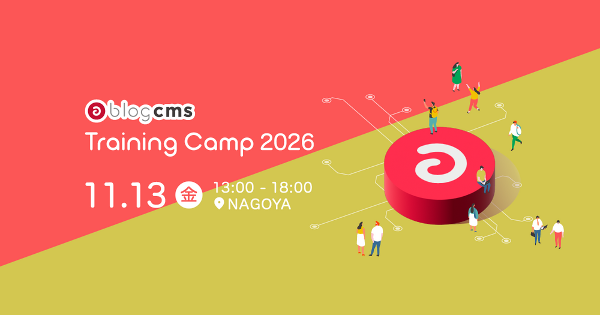

a-blog cms Training Camp 2026
本日の内容
1
v3.3 のプロジェクトについて
バージョンごとの役割と、v3.3 までのスケジュール
2
v3.2 で先に入れた改善
v3.3 を待たずに出した改善（v3.2.25〜v3.2.36）
3
v3.3 の新機能
カスタムフィールド定義・REST API・ログインの守り・リダイレクトなど
4
まとめ
いまからできる準備
1. v3.3 のプロジェクトについて
v3.3 の正式リリースは 2027 年春ごろ。
機能を絞って、一つひとつ丁寧に仕上げます
出典：a-blog cms プロジェクト管理シート（社内）
2026.11.13アルファ版
2027.1〜2 末機能凍結
2027 春ごろ正式リリース（未定）
1. v3.3 のプロジェクトについて ｜ ポイント
機能はバージョンの役割に照らして、どの版に入れるかを決めた
| 版 | 役割 | 本日紹介する機能 |
|---|---|---|
| v3.2 | 当たり前の品質の底上げ。早く出せる軽い改善を束ねる | ライブラリの更新と PHP 8.5 対応／メールの Twig／管理画面の改善／ブロックの追加（グループ・埋め込み・HTML）／CSV でのメディア取り込み |
| v3.3 | 戦略の本丸。AI エージェントから操作できる CMS（REST API）とコンテンツ管理の強化 | カスタムフィールド定義／REST API／ログインの守り（メール認証・パスキー）／リダイレクト管理 など |
判断のルール：v3.3 のコンセプトを前に進める機能は v3.3 へ。地味でも「当たり前」に必要な改善は v3.2 で先に出す。
本日は、v3.2・v3.3 で進めている 18 の機能を紹介します。
1. v3.3 のプロジェクトについて ｜ 本日の機能（1/2）
v3.2 の機能は、9 つすべてを公開済み
| # | 機能 | チケット | 状態（2026.11.09 時点） |
|---|---|---|---|
| 1 | ライブラリの更新と PHP 8.5 対応 | CMS-7714 | リリース済み v3.2.27 |
| 2 | メールテンプレートの Twig 対応 | CMS-7659 | リリース済み v3.2.25 |
| 3 | エントリー管理のタグ絞り込み・サブカテゴリー対応 | CMS-7729 | リリース済み v3.2.27 |
| 4 | 作成後に、作成したデータの編集画面へ移動 | CMS-7724 | リリース済み v3.2.29 |
| 5 | ブロックエディター：グループブロック | CMS-7719 | リリース済み v3.2.36 |
| 6 | ブロックエディター：埋め込みブロック | CMS-7720 | リリース済み v3.2.36 |
| 7 | ブロックエディター：HTML ブロック | CMS-7713 | リリース済み v3.2.36 |
| 8 | CSV インポートでのメディア取り込み（プロフェッショナル以上） | CMS-7715 | リリース済み v3.2.36 |
| 9 | 公式 Agent Skills の配布 | CMS-7716 | 公開済み GitHub（最新は v0.1.1） |
1. v3.3 のプロジェクトについて ｜ 本日の機能（2/2）
v3.3 の機能は、9 つのうち 6 つをアルファ版に取り込み済み
| # | 機能 | チケット | 状態 |
|---|---|---|---|
| 10 | Ping 送信機能の廃止（あわせて対応 PHP が 8.3〜8.5 に） | CMS-7725 | アルファ版に取り込み済み |
| 11 | カスタムフィールドを管理画面で定義 | CMS-7722 | アルファ版に取り込み済み |
| 12 | REST API（AI からの操作に対応） | CMS-7717 | アルファ版に取り込み済み |
| 13 | Custom Field Editor（表形式の一括編集） | CMS-7718 | 未着手（計画） |
| 14 | カテゴリーの CSV インポート | CMS-7723 | 未着手（計画） |
| 15 | 二段階認証にメール認証を追加 | CMS-7726 | アルファ版に取り込み済み |
| 16 | パスキー（WebAuthn）でのログイン | CMS-7730 | アルファ版に取り込み済み |
| 17 | 管理画面でのリダイレクト管理 | CMS-7728 | アルファ版に取り込み済み |
| 18 | ユーザー・カテゴリー一覧の React 化 | CMS-7727 | 未着手（計画） |
v3.3 の機能は、正式リリースまでに仕様が変わることがあります。
2. v3.2 で先に入れた改善
v3.3 を待たずに、
毎日の運用でつまずく所から直しました
リリース済みの機能は、v3.2 系の最新版（v3.2.39）で使えます
土台ライブラリ更新・PHP 8.5
管理画面絞り込み・作成後の遷移
入力グループ・埋め込み・HTML ブロック
移行CSV でのメディア取り込み
2. v3.2 で先に入れた改善 ｜ 機能 1 ｜ ライブラリの更新と PHP 対応
ライブラリを更新し、PHP 8.5 でも動くようにした
v3.2：PHP 8.1〜8.5（v3.2.27 から）
- 問題：PHP 8.4 のサポート終了に備え、新しい PHP でも動くことを保証し続ける必要がある。これまでは 8.5 では起動しなかった
- 対応：使っている各種ライブラリを新しい版に更新し、PHP 8.5 で動くようにした。動作範囲は PHP 8.1 以上 8.6 未満
- 必要な作業：v3.2.27 以降に更新するだけ
v3.3：PHP 8.3〜8.5
- v3.3 では PHP 8.1・8.2 のサポートを終え、PHP 8.3 以上 8.6 未満で動かす
- v3.2 系を使っている間は、これまでどおり PHP 8.1〜8.5 で動く
- v3.3 に上げる前に、サーバーの PHP を 8.3 以上にしておく
2. v3.2 で先に入れた改善 ｜ 機能 2 ｜ メールテンプレートの Twig 対応
メールの文面も、公開側のテーマと同じ Twig で書ける
1
これまでの問題
公開側・管理画面は Twig で書けるのに、メールだけは従来の a-blog cms 独自の記法のままだった。条件分岐やループも書きにくい
→
2
実装したこと
テーマで Twig を有効にしていれば、メールテンプレートを Twig で書ける。フォームの自動返信・管理者宛、会員登録・パスワード再設定、承認通知、コメント通知などが対象
→
3
使える場面
お問い合わせの種別ごとに自動返信の文面を変える。公開側と同じ部品を include して、署名やフッターを共通にする
| 項目 | 仕様 |
|---|---|
| ファイルの探し方 | body.txt を指定すると body.txt.twig を先に探す（HTML メールは body.twig → body.html.twig → body.html） |
| 値の出し方 | 公開側と同じ形。{{ name.value }}、複数値は {{ name.array }} |
| 管理画面での直接入力 | Twig を使えるが、安全のため if・for・set・block など一部のタグに限る（extends は不可） |
| エラーのとき | 警告をログに残し、Twig を通さずに従来の処理で送る |
| 注意 | Twig を有効にしたテーマでは、拡張子が .twig でないメールテンプレートも Twig として処理される。本文に {{ や {% がないか確認する |
2. v3.2 で先に入れた改善 ｜ 機能 3 ｜ タグ絞り込み・サブカテゴリー対応（1/2）
タグやサブカテゴリーでも、管理画面で記事を絞り込める
1
これまでの問題
エントリー管理の絞り込みはカテゴリー・ステータス・期間・ユーザーなどだけ。タグで分類しているサイトでは記事を探せなかった。サブカテゴリーに入れた記事もカテゴリー絞り込みに出なかった
→
2
実装したこと
「高度な絞り込み」にタグを追加。カテゴリーで絞り込むと、サブカテゴリーに入れたエントリーも表示されるようにした
→
3
使える場面
メディアサイトで「特集タグ」の記事だけを点検する。複数のカテゴリーにまたがる記事（例：イベント × 地域）を、どちらのカテゴリーからでも一覧にする
| 項目 | 仕様 |
|---|---|
| タグの選び方 | 複数選択できる。選んだタグをすべて持つエントリーに絞る（AND） |
| タグの候補 | タグを選ぶと、そのタグと一緒に使われているタグだけが候補に残る（ゴミ箱のエントリーは除く） |
| カテゴリー絞り込み | メインカテゴリーに加えてサブカテゴリーも対象。「子カテゴリーを含む」ときはサブカテゴリー側も子孫まで含める。同じ記事は 1 回だけ表示 |
| 必要な準備 | なし（v3.2.27 以降に更新すれば使える） |
2. v3.2 で先に入れた改善 ｜ 機能 3 ｜ タグ絞り込み・サブカテゴリー対応（2/2）
タグを選ぶと、一緒に使われているタグだけが候補に残る
① タグを選ぶ：「高度な絞り込み」の「タグ」で「ペット可」を選ぶと、候補が一緒に使われているタグだけになる

② 検索する：「ペット可」のタグを持つエントリーに絞り込まれた

画面：v3.2 系のローカル環境（バージョン定数 3.2.39）。データはサンプルです。
2. v3.2 で先に入れた改善 ｜ 機能 4 ｜ 作成後に編集画面へ移動（1/2）
作成後は編集画面へ進むので、同じものを二重に作らない
1
これまでの問題
作成後も、入力内容が残ったままの新規作成画面に留まっていた。編集画面と思って直して保存すると、もう 1 件作成されてしまう。リロードでも再送信されうる
→
2
実装したこと
作成に成功したら、作成したデータの編集画面へリダイレクトする（PRG：Post → Redirect → Get）。失敗したときは従来どおり入力値を残して作成画面を表示
→
3
使える場面
カテゴリーを作ってすぐ詳細を設定する。a-blog cms に慣れていない運用担当者が、意図しないデータを作ってしまうのを防ぐ
| 項目 | 仕様 |
|---|---|
| 対象の画面 | カテゴリー・ユーザー・フォームに加え、Webhook・コンフィグセット・エイリアス・ロール・ユーザーグループ・スケジュール・ルール・ショートカット |
| 完了メッセージ | URL のパラメータではなく 1 回だけ表示するメッセージにした。リロードしても「作成しました」が出続けない |
| ブログだけ例外 | 今のブログの編集画面に留まり、メッセージ内のリンクから新しいブログへ移動する（別ドメインのブログへ移るとログインが切れるため） |
| 必要な準備 | なし（v3.2.29 以降） |
2. v3.2 で先に入れた改善 ｜ 機能 4 ｜ 作成後に編集画面へ移動（2/2）
作成した直後の画面を、以前と比べる
以前（v3.2.28 まで）：作成しても新規作成の画面のまま。ボタンは「作成」で、押し直すともう 1 件できる

v3.2.29 以降：作成したカテゴリーの編集画面へ移る。ボタンは「保存」「削除」になり、パンくずにカテゴリー名が出る

画面：左は v3.2.28 相当、右は v3.2 系（バージョン定数 3.2.39）のローカル環境。データはサンプルです。
2. v3.2 で先に入れた改善 ｜ 機能 5 ｜ グループブロック（1/5）
複数のブロックを 1 つにまとめ、見た目を付けられる
1
これまでの問題
ブロックエディターでは、複数のブロックをまとめて背景色や余白を付ける手段がなく、レイアウトの表現が限られていた
→
2
実装したこと
ブロックを包むグループブロックを追加。HTML 要素・スタイル（class）・背景色を選べる。グループの中にグループやカラムも入れられる
→
3
使える場面
記事の途中に背景色付きの「お知らせ」枠を作る。テーマで用意したスタイル（囲み・強調など）を、運用者は選ぶだけで使う
グループにする方法
- 複数のブロックを選び、ツールバーの「グループ化」
- スラッシュコマンド
/group、または挿入メニュー（レイアウト） - ショートカット：
Mod+Gでグループ化、Mod+Shift+Gで解除
グループを選んだときの設定（ツールバー）
- HTML 要素：div・section・aside など
- スタイル：管理画面で定義した class から選ぶ
- 背景色：カラーパレットから選ぶ
- section・aside・nav のときは aria-label を入力できる
2. v3.2 で先に入れた改善 ｜ 機能 5 ｜ グループブロック（2/5）
ブロックを選んで「グループ化」し、ツールバーで見た目を選ぶ
① 選んでグループ化：段落を 3 つ選び、ツールバーの「グループ化」を押す（⌘G でも可）

③ できあがり：aside 要素・黄色の背景で、3 つの段落が 1 つの枠になった

② 見た目を選ぶ：グループのツールバーで HTML 要素・スタイル・背景色を選ぶ

画面：v3.2.38（ローカル環境）。HTML 要素とスタイルの選択肢はブロックエディター設定で変わります。
2. v3.2 で先に入れた改善 ｜ 機能 5 ｜ グループブロック（3/5）
グループは「囲む」、カラムは「横に並べる」
グループブロックの HTML
<aside data-type="group" data-tag="aside" ← 要素を選べる
class="（選んだスタイル）"
style="background-color: #fffb8b"
aria-label="お知らせ">
<p>年末年始の営業について</p> ← ブロックが直接入る
<p>12月28日から1月4日まで休業します。</p>
</aside>
カラムブロックの HTML
<div data-type="columns" ← 常に div
data-layout="two-column"
class="layout-two-column">
<div data-type="column" data-position=""> ← 列ごとの箱
<p>左の列</p>
</div>
<div data-type="column" data-position="">…</div>
</div>
| グループブロック | カラムブロック | |
|---|---|---|
| 役割 | 複数のブロックを 1 つの枠で囲む | ブロックを 1〜3 列に横に並べる |
| 外側の要素 | 設定した要素から選ぶ（既定は div・section・aside） | 常に div |
| 中の構造 | ブロックが直接入る | 列（column）の箱が 1〜3 個入り、その中にブロック |
| 見た目の決め方 | スタイル（class）と背景色を選ぶ | 列数（layout-two-column など）で CSS グリッドが決まる |
グループとカラムは互いに入れ子にできる（例：カラムの各列にグループを入れて、背景付きのカードを横に並べる）。HTML は主な属性だけを抜粋。
2. v3.2 で先に入れた改善 ｜ 機能 5 ｜ グループブロック（4/5）
選べる要素とスタイルは、ブロックエディター設定で決める
ブロックエディター設定に増えた項目
| グループブロック HTML要素 | 既定は div・section・aside。div・section・article・aside・header・footer・nav から選ぶ（main は不可） |
| グループブロック クラス | ラベル・class・説明・アイコンを登録。「一発グループ化」を有効にするとワンクリックでグループ化できる |
| 背景色の表示 | ツールバーに背景色を出すか（既定は表示） |
既存サイトでの準備
新規インストールでは最初からブロックメニューに入っています。ブロックエディター設定を保存済みのサイトは、ブロックメニューに「グループ」を追加してください。余白や囲みの見た目は、テーマの CSS で class を用意します。
対象：v3.2.36 以降。出力される HTML は前のスライドを参照。
2. v3.2 で先に入れた改善 ｜ 機能 5 ｜ グループブロック（5/5）
選べる要素とスタイルは、設定の画面で登録する
ブロックエディター設定：「グループブロック HTML要素」で選べる要素を並べ、「グループブロック クラス」でスタイル（class・ラベル・説明・一発グループ化・アイコン）を登録する

画面：v3.2 系のローカル環境（バージョン定数 3.2.39）。データはサンプルです。
2. v3.2 で先に入れた改善 ｜ 機能 6 ｜ 埋め込みブロック（1/3）
URL を入れるだけで、動画や SNS の投稿を記事に埋め込める
1
これまでの問題
動画・SNS・地図などの外部サービスを埋め込むには、埋め込み用の HTML を手で貼る必要があった。HTML に慣れていない運用者には難しい
→
2
実装したこと
埋め込みブロックを追加。URL を確定するとサーバーが oEmbed・OGP で情報を取り、プレビューを表示する。許可していないサービスはカード表示になる
→
3
使える場面
イベント報告に動画を入れる。SNS の投稿を引用する。許可していないサイトの URL でも、タイトルと画像のカードで見栄えよく紹介する
操作の流れ
- 挿入メニューから「埋め込み」を追加
- ブロック内の入力欄に URL を入れて確定 → プレビュー
- ツールバーで配置・表示サイズ・キャプション・新しいタブで開く を調整
うまくいかないとき
- 取得に失敗したら「再試行」「リンクに変換」「URLを変更」を選べる
- 「通常のリンクにする」で、URL のリンクを入れた段落に戻せる
2. v3.2 で先に入れた改善 ｜ 機能 6 ｜ 埋め込みブロック（2/3）
URL を入れて「埋め込む」を押すと、編集画面でプレビューされる
① URL を入れる：埋め込みブロックに URL を入れて「埋め込む」を押す。ツールバーで配置・キャプション・表示サイズを選べる

② サイトの URL：a-blogcms.jp を入れると、画像・タイトル・説明のカードになる

③ 動画の URL：YouTube の URL を入れると、動画のプレーヤーが表示される。「URLを編集」で入れ直せる

画面：v3.2 系のローカル環境（バージョン定数 3.2.39）。例として a-blog cms の公式サイトと公式動画を埋め込んでいます。
2. v3.2 で先に入れた改善 ｜ 機能 6 ｜ 埋め込みブロック（3/3）
埋め込んでよいサービスは、既存の許可リスト（YAML）で決める
表示の決まり方
| 許可リストにある | サービスの埋め込み（iframe など）をサニタイズして表示 |
| 許可リストにない | 画像・タイトル・提供元・説明のカードで表示 |
| 取得に失敗 | カード表示、または編集画面でリンクに変換 |
埋め込み専用の設定は作らず、本文の HTML を通すときの許可リストと同じものを使います。管理画面のプレビューも隔離して表示し、サーバー側でもう一度サニタイズします。
許可するサービスを足すとき
# iframe を許可するホストを追加
extends_html_purifier_iframe_allowed_hosts:
- example.com/embed
# script を使う埋め込みを許可
extends_html_purifier_script_allowed_hosts:
- example.com
書式は
host[/パスの前方][|allow[|sandbox]]。主な動画・地図サービスは最初から許可されています。既存サイトでの準備：ブロックエディター設定を保存済みのサイトは、ブロックメニューに「埋め込み」を追加してください。
2. v3.2 で先に入れた改善 ｜ 機能 7 ｜ HTML ブロック（1/2）
ブロックエディターの中に、自由な HTML を書ける
1
これまでの問題
ブロックエディターには、任意の HTML や JavaScript を書く手段がなかった。用意されたブロックにない表現は、エディターの外で対応するしかなかった
→
2
実装したこと
HTML ブロックを追加。モーダルでコードを書きながら、隣でプレビューを確認できる。プレビューは管理画面から切り離した枠の中で動く
→
3
使える場面
外部サービスが発行するウィジェットのコードを貼る。用意されたブロックでは作れない表や装飾を、その記事だけに入れる
出力のされ方
- 出力時に、危険なタグ（既定は script・form）を取り除くかは
private/config.system.yamlのstrip_dangerous_tagで決まる（管理画面にはない） - 同梱の設定は
onで取り除く。この行がないサイトはoff扱いで、書いた HTML がそのまま出る - ブロックを使える人を権限で絞る仕組みはない
既存サイトでの準備（v3.2.36 以降）
- ブロックエディター設定を保存済みのサイトは、ブロックメニューに「HTML」を追加する
- プレビューにテーマの CSS を当てたいときは、管理画面のエディター用 CSS の指定を使う
2. v3.2 で先に入れた改善 ｜ 機能 7 ｜ HTML ブロック（2/2）
左に HTML を書くと、右のプレビューにすぐ反映される
「HTMLを編集」のモーダル：左がコード、右がプレビュー。「拡大」でプレビューを大きく表示できる

画面：v3.2 系のローカル環境（バージョン定数 3.2.39）。データはサンプルです。画面の注記のとおり、外部サービスの埋め込みやスクリプトはプレビューでは正しく動かないことがあります。
2. v3.2 で先に入れた改善 ｜ 機能 8 ｜ CSV インポートでのメディア取り込み（1/2）
CSV の移行で、画像やファイルもメディアに取り込める
1
これまでの問題
別の CMS からの移行で、記事は CSV で入れられても、画像やファイルは手で登録し直す必要があった。移行で一番時間がかかる部分だった
→
2
実装したこと
CSV インポートで、メディア用のカスタムフィールドとブロックエディター本文の画像・ファイルを、自動でメディアに登録する（プロフェッショナル以上）
→
3
使える場面
古いサイトのリニューアルで、記事と画像をまとめて移す。移行のリハーサルをドライランで繰り返す
| 項目 | 仕様 |
|---|---|
| CSV の列 | フィールド名@media（数値は既存のメディア ID）、フィールド名@block-editor（本文の画像・ファイル） |
| 取り込み元 | サーバー上の専用ディレクトリ（archives/csv-import/source/）に置いたファイル。URL を書いた場合もパスだけを使い、ネット経由では取りに行かない |
| 失敗したとき | その項目だけを空にして警告を出す。失敗した行は CSV でダウンロードして直し、取り込み直せる |
| そのほか | ドライランができる。同じファイルを二重に登録しない。1 ファイル 50MB まで |
2. v3.2 で先に入れた改善 ｜ 機能 8 ｜ CSV インポートでのメディア取り込み（2/2）
書き方とドライランは、CSV インポートの画面で確かめられる
CSV インポート：画面の説明に @media・@block-editor の指定と、取り込み元の置き場所（archives/csv-import/source/）が載っている。下の「ドライラン」で保存せずに結果を確かめられる

画面：v3.2 系のローカル環境（バージョン定数 3.2.39）。データはサンプルです。
2. v3.2 で先に入れた改善 ｜ 機能 9 ｜ 公式 Agent Skills の配布
AI が a-blog cms の作法でテーマやプラグインを書けるように
1
これまでの問題
AI エージェントでテーマやプラグインを作ろうとしても、a-blog cms のテンプレートの書き方やモジュールの作法を知らないため、そのままでは使えないコードになりやすい
→
2
公開したこと
GitHub の appleple/acms-agent-skills で公開（MIT）。Agent Skills の形式で 15 のスキルを、サイト制作用・プラグイン開発用・共通の 3 つのプラグインに分けた。Claude Code・Codex・GitHub Copilot・Cursor などで使える
→
3
使える場面
「この静的サイトを a-blog cms のテーマにして」「お問い合わせフォームを作って」「このサイトを 3.1 から 3.2 に上げたい」のように、いつもどおり依頼するだけで、合うスキルをエージェントが選んで読み込む
Claude Code での入れ方：
claude plugin marketplace add appleple/acms-agent-skills のあと、claude plugin install acms-site-builder@acms-agent-skills（プラグイン開発なら acms-plugin-developer）。ほかのエージェントは npx skills add appleple/acms-agent-skills などで入れられます。出典：GitHub の README・CHANGELOG（v0.1.1、2026.11.04）。対象は a-blog cms Ver. 3.2 以上で、仕様は Ver. 3.2.38 の本体ソースで確かめています。
3. v3.3 の新機能
コンテンツの構造を CMS が持ち、
人と AI の両方から扱えるようにします
開発中の内容です。正式リリースまでに変わることがあります
前提PHP 8.3〜8.5・Ping 廃止
本丸カスタムフィールド定義・REST API
ログインメール認証・パスキー
運用リダイレクト・一覧
3. v3.3 の新機能 ｜ 機能 10 ｜ 変わる前提
v3.3 は PHP 8.3〜8.5 で動き、Ping 送信はなくなる
対応する PHP は 8.3〜8.5 に
- v3.2 系は PHP 8.1〜8.5。v3.3 は PHP 8.3〜8.5（8.3 以上 8.6 未満）で動く
- v3.3 では PHP 8.1・8.2 のサポートを終える方針（CMS-7750）。パスキーに使うライブラリの修正版も、PHP 8.2 以上を必要とする
- v3.3 へ上げる前に、サーバーの PHP のバージョンを確認する
Ping 送信機能の廃止（CMS-7725）
- 問題：更新 Ping はほとんど使われておらず、v3.2.0 から非推奨。使わない機能を外部への送信口として残す理由がない
- 削除したもの：ダッシュボードの「Ping送信（非推奨）」ボタン、コンフィグの「Pingショット」欄、送信処理、送信用テンプレート
- 保存済みの設定値はそのまま残るが、どこからも使われない
- 独自テーマ・拡張で Ping 送信を呼んでいるサイトは、v3.3 の前に外す
3. v3.3 の新機能 ｜ 機能 11 ｜ カスタムフィールドの定義（1/2）
カスタムフィールドを、HTML を書かずに管理画面で追加できる
1
これまでの問題
カスタムフィールドを足すには、テーマに HTML を書く必要があった。運用者が自分で項目を増やせず、AI や API からも「どんな項目があるか」を読めなかった
→
2
実装したこと
管理画面に「フィールド定義」を追加。フィールドセットを作り、型を選んで並べるだけで、編集画面に入力欄が出る。値の保存先とテンプレートでの出し方は従来どおり
→
3
使える場面
運用担当者が「開催日」「会場」などの項目を、制作会社に頼まずに追加する。公開後のサイトに、テーマを触らずに項目を足す
| 項目 | 仕様 |
|---|---|
| 使える場所 | エントリー・カテゴリー・ブログ・ユーザー・モジュール |
| 型 | テキスト・数値・日時などの入力、メディア画像・ファイル、エントリー／カテゴリー／ユーザーの参照、地図、ブロックエディターなど 32 種。タブ・アコーディオン・横並び・繰り返しでレイアウトを組む |
| 出し分け | 他のフィールドの値で表示を切り替える。カテゴリーやロールでフィールドセットを出し分ける。ロールごとに読み取り専用・非表示にする |
| 必須 | 「任意」「保存時に必須」「公開時に必須」から選ぶ。サーバー側でも確かめる |
| 権限 | ロールに「フィールド定義の編集」を追加 |
3. v3.3 の新機能 ｜ 機能 11 ｜ カスタムフィールドの定義（2/2）
いまのフィールドはそのまま使え、独自の型はテーマで足せる
これまでのカスタムフィールドとの関係
- テーマの
field.htmlなどに書いたフィールドは、そのまま動く - 同じキーがテーマの
field.htmlにもあれば、テーマの入力欄を優先する - 値は従来のカスタムフィールドと同じ場所に保存。テンプレートでは今までどおり
{キー}で出す - 編集画面のレイアウトを上書きしているテーマは、定義を表示するモジュールの記述（3 行）を足す。
field.htmlだけの上書きなら不要
テーマで独自の型を足す
# themes/<テーマ>/admin/field-types/calendar/field-type.json
{
"label": "カレンダー",
"icon": "calendar_month",
"template": "input.html"
}
入力欄は ACMS テンプレートか Twig で書きます。
定義もテーマで配れる：
admin/field-definitions/<対象>.json に、エクスポートと同じ形式で書く（同じキーなら管理画面の定義が優先）。定義のエクスポート／インポート、キーの変更、子ブログへの継承にも対応CMS-7722 はアルファ版に取り込み済みです。正式リリースまでに仕様が変わることがあります。
3. v3.3 の新機能 ｜ 機能 12 ｜ REST API（1/2）
外部のシステムや AI から、サイトのデータを読み書きできる
1
これまでの問題
これまでの API 機能は、モジュールの表示結果を JSON で返す読み取り専用の仕組み。外部のシステムや AI から記事を作る・直すといった操作はできなかった
→
2
実装したこと
リソースごとの REST API（
/rest-api/acms/v1/…）を追加。ユーザーごとのトークンで認証し、OpenAPI 3.1 の仕様書も出力する→
3
使える場面
社内システムの新着情報を自動でエントリーにする。AI エージェントに記事の下書きを作らせる。サイトの内容を別のアプリに表示する
| リソース | できること |
|---|---|
| エントリー・メディア | 一覧・取得・作成・更新・削除（GET / POST / PUT / PATCH / DELETE）。エントリーの公開・非公開の切り替えや複製、共有プレビューの URL も |
| そのほか | カテゴリー・ブログ・ユーザー・モジュール・ルール・コンフィグセット・設定なども読み書きできる（タグは作成を除く）。キャッシュのクリア、バックアップなど時間のかかる処理の実行 |
| 既存の API 機能 | URL を分けたので、これまでの /api/… はそのまま使える |
3. v3.3 の新機能 ｜ 機能 12 ｜ REST API（2/2）
トークンと権限で守り、AI からは MCP でもつなげる
認証と守り
- 既定は無効。サイトの設定で有効にする
- トークンはユーザー本人が管理画面で発行。使える範囲（スコープ）と有効期限（既定 90 日）を選ぶ。値は発行時に 1 回だけ表示
- 操作できる範囲は、そのユーザーの権限とスコープの両方で決まる
- HTTPS 必須。回数制限（既定はトークンごとに 1 分 300 回）、書き込みは監査ログに残す
- 管理者は、全ユーザーのトークンを一覧して失効できる
AI から使うための仕組み
- ドライラン：保存せずに結果だけ確かめられる
- エントリーの削除はゴミ箱へ：完全に消すには明示の指定が要る（メディアは削除すると消える）
- 上書きの防止：他の人の更新と衝突したら止める（If-Match）
- 二重実行の防止：同じ依頼をもう一度送っても 1 回分だけ処理（Idempotency-Key）
AI エージェントから直接つなぐ：MCP サーバー（
/mcp/）と OAuth 2.1 を内蔵。どちらも既定は無効で、REST API とは別に有効にするCMS-7717 はアルファ版に取り込み済みです。正式リリースまでに仕様が変わることがあります。
3. v3.3 の新機能 ｜ 機能 13・14 ｜ 一括編集とカテゴリーのインポート（計画）
大量のデータを、まとめて直す・まとめて作る手段を用意する
Custom Field Editor（表形式の一括編集）
計画CMS-7718 ／ カスタムフィールドの定義（機能 11）が前提
課題複数のエントリーのカスタムフィールドを一覧で直せず、大量の更新は 1 件ずつ開く必要がある
予定エントリー一覧を「行＝エントリー、列＝カスタムフィールド」の表にして、セルをその場で編集。変えたところだけ保存する
場面商品の価格や在庫の表示を、まとめて直す
カテゴリーの CSV インポート
計画CMS-7723
課題カテゴリーをたくさん作る作業は、管理画面で 1 件ずつ登録するしかない
予定名前・コード・親カテゴリー・ステータス・カスタムフィールドを CSV から一括登録。親カテゴリーの確認、取り込み前の確認画面、失敗行の記録を用意する
場面移行やサイトの立ち上げで、階層のあるカテゴリーをまとめて作る
未着手のため、Jira の計画をもとにしています。
3. v3.3 の新機能 ｜ 機能 15 ｜ メールの二段階認証（1/3）
認証アプリがなくても、メールの確認コードで二段階認証できる
1
これまでの問題
二段階認証は認証アプリ（TOTP）だけ。アプリを入れられない・使い慣れていない人がいると導入しにくい。スマートフォンをなくすとログインできない
→
2
実装したこと
パスワードの後に、登録メールアドレスへ確認コードを送る方式を追加。手段をいくつも有効にして「メイン」を選び、使えないときは別の手段に切り替えられる
→
3
使える場面
会員サイトで、会員にアプリを入れてもらわずに二段階認証を使う。スタッフが端末をなくしたときに、メールで代わりにログインする
ユーザーが設定すること
- 二段階認証の設定画面で、手段（認証アプリ・メール・パスキー）ごとに「有効」と「メイン」を選ぶ
- 管理画面のユーザー設定と、会員のマイページの両方にある
ログイン時の動き
- メインの手段で認証。使えなければ次の手段へ自動で切り替える
- 「別の方法で認証する」で手段を変えられる。コードの再送もできる
3. v3.3 の新機能 ｜ 機能 15 ｜ メールの二段階認証（2/3）
確認コードは短い時間で失効し、総当たりはロックで防ぐ
確認コードの決まり（既定値）
| コード | 6 文字（0〜9 と A〜F）。新しく送ると古いコードは使えない |
| 有効期限 | 10 分 |
| 再送の間隔 | 60 秒 |
| 再送の回数 | 5 回でロック |
| 入力の回数 | 5 回失敗でロック |
ロックの期間は、ログイン設定の試行回数制限と同じ値を使います。
サイト側の設定
- 使えるかどうかは、これまでの「二段階認証」の設定に従う（メール専用の ON/OFF はない）
- 上の 4 つの値は
config.system.yamlで変更する（管理画面には出さない） - メールの文面は
themes/system/mail/tfa-email/のテンプレートで変えられる - メールアドレスが空のユーザーは、メール認証を設定できない
3. v3.3 の新機能 ｜ 機能 15 ｜ メールの二段階認証（3/3）
認証手段ごとに「有効」と「メイン」を選ぶ
2 段階認証の設定：認証アプリとメールが並び、それぞれ「有効」と「メイン」を選ぶ。ここではメールを有効・メインにした状態（保存前）

画面：v3.3 アルファ版のローカル環境。正式リリースまでに変わることがあります。認証アプリの QR コードとシークレットキーはぼかしています。
3. v3.3 の新機能 ｜ 機能 16 ｜ パスキー（1/3）
指紋・顔・PIN のパスキーで、パスワードなしでログイン
1
これまでの問題
パスワードは漏えい・使い回し・偽サイトへの入力の危険がある。毎回の入力も手間
→
2
実装したこと
WebAuthn のパスキーでのログインに対応。パスワードの代わり（1 段目）にも、二段階認証の手段（2 段目）にも使える。管理ログインと会員サインインで別々に有効にできる
→
3
使える場面
管理画面だけパスキーを有効にして、スタッフのログインを安全に。会員サイトで、パスワードを忘れがちな会員のログインを楽にする
ログイン画面
- 「パスキーでログイン」ボタンが増える（対応ブラウザのときだけ表示）
- パスキーでログインしたときは、二段階認証を求めない（端末での本人確認を必須にしているため）
動作の条件
- https のサイトでだけ使える（開発用の localhost は例外）
- PHP 8.3〜8.5（v3.3 の動作条件）
3. v3.3 の新機能 ｜ 機能 16 ｜ パスキー（2/3）
パスキーは複数登録でき、なくしたら管理者がリセットできる
サイトの設定（ログイン設定 > パスキー）
| 管理ログイン | /login でパスキーを使うか |
| 会員サインイン | /signin でパスキーを使うか |
2 つは別々に設定できます。例：会員だけ有効にして、管理者は従来のログインのまま。
2 段目として使う：二段階認証の設定画面で、認証アプリ・メールと並ぶ手段の 1 つとして ON/OFF できます。
パスキーの登録と管理
- 会員はマイページ、管理ユーザーは管理画面の「パスキー」ページで登録
- 端末ごとに複数登録できる。名前は「Mac の Chrome」のように自動で付き、後から変えられる
- 登録と削除の前に、本人確認をもう一度求める
- 管理者は、ユーザー編集画面の「パスキーをリセット」で、そのユーザーのパスキーをすべて消せる（自分自身には使えない）
3. v3.3 の新機能 ｜ 機能 16 ｜ パスキー（3/3）
ログイン画面にボタンが増え、パスキーはユーザーごとの画面で登録する
① ログイン画面：「パスキーでログイン」のボタン

② ログイン設定：管理ログインとサインインで別々に有効にする

③ パスキーの登録：「このデバイスにパスキーを登録」から登録する

画面：v3.3 アルファ版のローカル環境。正式リリースまでに変わることがあります。
3. v3.3 の新機能 ｜ 機能 17 ｜ リダイレクト管理（1/3）
URL の転送を、.htaccess を触らずに管理画面で設定できる
1
これまでの問題
URL を変えたときの 301 転送は、.htaccess などのサーバー設定を手で書く必要があった。運用者だけでは対応できず、書き間違えるとサイトが表示されなくなることもある
→
2
実装したこと
管理画面に「リダイレクト」を追加。転送元・転送先・ステータスコード・いつ転送するかをルールとして登録し、ドラッグで優先順位を並べ替える
→
3
使える場面
リニューアルで変わった旧 URL を新 URL へ。正規表現で
/news/(\d+).html → /topics/$1/ のようにまとめて転送。終了したキャンペーンページを 410 で終了扱いにする| 項目 | 仕様 |
|---|---|
| マッチ方式 | 完全一致・前方一致（パスの区切り単位）・正規表現。正規表現の値は転送先で $1 として使える |
| 転送先 | / で始まるサイト内のパス、または http(s) の外部 URL |
| ステータスコード | 301（既定）・302・307・308・410・451。410 と 451 は転送せずに終了を返す |
| クエリ文字列 | 転送先へ引き継ぐ（既定）・無視する・条件に含める |
3. v3.3 の新機能 ｜ 機能 17 ｜ リダイレクト管理（2/3）
既定は「404 のときだけ」転送。表示できるページは邪魔しない
いつ転送するか（ルールごとに選ぶ）
| 404 のときだけ（既定） | そのURLが本来「ページがありません」になるときだけ転送。移行の取りこぼし対策に安全 |
| 常に | ページがあっても、一致したら転送する |
判定の順：「常に」のルール → 通常のページ → 「404 のときだけ」のルール → 既存のエントリーコードでの転送。非公開ブログや IP 制限で見られないページは転送しません。
安心して使うための仕組み
- 保存時に、正規表現の書き間違い・同じルールの重複・転送のループを止める
- ルールはブログごと。新しく作るルールは、下の階層のブログにも適用される（変更できる）
- 管理画面・API・メディアなどへのアクセスは転送しない
- 編集できるのは管理者権限のユーザー
今回は入れないもの：CSV での一括登録、404 のログ、ヒット数の記録
CMS-7728 はアルファ版に取り込み済みです。正式リリースまでに仕様が変わることがあります。
3. v3.3 の新機能 ｜ 機能 17 ｜ リダイレクト管理（3/3）
ルールは一覧で優先順位を並べ、1 件ずつ詳細を設定する
① 一覧：転送元・転送先・コード・発火のタイミングが並ぶ。左のつまみをドラッグして優先順位を変える

② 詳細：一致のさせ方・ステータスコード・転送先・発火タイミング・クエリ文字列・グローバルを設定する

画面：v3.3 アルファ版のローカル環境。正式リリースまでに変わることがあります。
3. v3.3 の新機能 ｜ 機能 18 ｜ ユーザー・カテゴリー一覧の React 化（計画）
ユーザー・カテゴリー一覧も、エントリー一覧と同じ操作感に
1
いまの問題
ユーザー一覧・カテゴリー一覧はサーバー側で HTML を作るだけの画面で、並べ替え・絞り込み・まとめての操作がしにくい
→
2
予定していること
エントリー一覧で使っている共通の一覧部品（React）で作り直し、列での並べ替え・絞り込み・複数選択でのまとめ操作を提供する
→
3
使える場面
会員の多いサイトで、条件に合うユーザーを選んでまとめて権限やステータスを変える。カテゴリーの多いサイトで目的のカテゴリーをすぐ見つける
守ること
- いまの一覧でできる検索・絞り込みは、引き続き使える
- 権限のないユーザーには、まとめての操作を出さない
- 件数が多くてもページ送りで表示できる
進め方
- どちらか 1 画面から始め、知見をためてから他の一覧へ広げる
- カテゴリーの階層をドラッグで並べ替える操作は、最初の版では無理に入れない
未着手のため、Jira の計画（CMS-7727）をもとにしています。
4. まとめ
いまからできる準備
1
v3.2 で使える
絞り込み・作成後の遷移・メールの Twig・CSV でのメディア取り込み
2
ブロックエディター
グループ・埋め込み・HTML で、表現の幅が広がった
3
v3.3 の本丸
フィールド定義と REST API で、人と AI が同じ構造を扱う
4
ログインと URL
メール認証・パスキー・リダイレクト管理
5
変わる前提
v3.3 は PHP 8.3〜8.5。Ping 送信はなくなる
持ち帰りチェックリスト
- 担当サイトを v3.2 系の最新版（v3.2.39）にする
- ブロックメニューに「グループ」「埋め込み」「HTML」を追加する
- 独自テーマ・拡張で Ping 送信を使っていないか確認する
- Twig のテーマなら、メールテンプレートの記法を確認する
- サーバーの PHP を 8.3〜8.5 にできるか確認する
- .htaccess に書いた転送を洗い出しておく